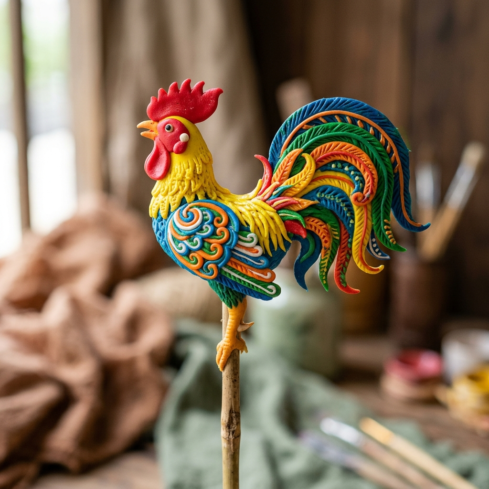

🔍 Nhấp xem ảnh lớn
Kỹ thuật nặn
VIII. Sản phẩm và hình tượng
📸 🎬 Đa phương tiện
Gà trống
/gà trống/
EN
/ˈruː.stər ˈfɪɡ.jər.iːn/
Rooster Figurine
Là một trong những hình tượng phổ biến trong tò he, thường được nặn từ khối bột màu, tạo hình với các chi tiết như mào, đuôi, cánh, chân... Gà trống tượng trưng cho sự mạnh mẽ, may mắn và thường xuất hiện trong các dịp lễ, Tết.
English Meaning & Cultural Context:
A traditional folk rooster toy sculpted on a stick, embodying courage, five cardinal virtues, and good fortune in Vietnamese culture.
Kỹ thuật tiêu biểu: Tạo hình từ khối bột màu, kỹ thuật ấn mào, khía lông cánh bằng lược và uốn cong lông đuôi.
Ghi chép điền dã thực địa (Fieldwork Ethnography):
Thu thập trực tiếp qua phỏng vấn sâu nghệ nhân làng Xuân La trong khuôn khổ nghiên cứu bảo tồn di sản văn hóa phi vật thể 2026.